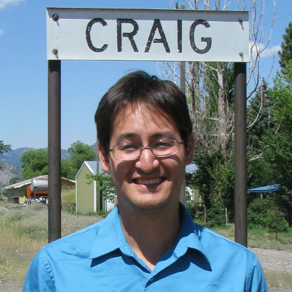

About Me
{kind=link}
I grew up in the shrub-steppe landscape of south-eastern Washington State. My father works as an engineer helping to clean up the Hanford Site, which was originally established to manufacture plutonium for use in the Manhattan Project. My mother is a nurse and comes from farming family. When I was little, I spent a lot of time running around with my cousins on the farm. My brother is a teacher in the greater Portland area. My family is the best.
I have always enjoyed math and science. The highlight of my pre-college days is probably participating in the National Science Bowl with some of my high school friends. I was also a pretty avid soccer player for a number of years. After High School, I studied math and computer science at Harvey Mudd College, a small tech school on the eastern outskirts of Los Angeles County. Following that, I lived in Vancouver, Canada for two years while earning a master's degree in computer science from Simon Fraser University.
In 2010, I joined the Math for America, Los Angeles program, which is designed to help math teachers in the greater Los Angeles area. I taught geometry, statistics, and computer science in the Los Angeles Unified School District for five years.
In 2016, I married my wonderful wife down in San Pedro, California. That June, I retired from teaching and studied up to become a software engineer. I expect to start working for Google in early 2017.